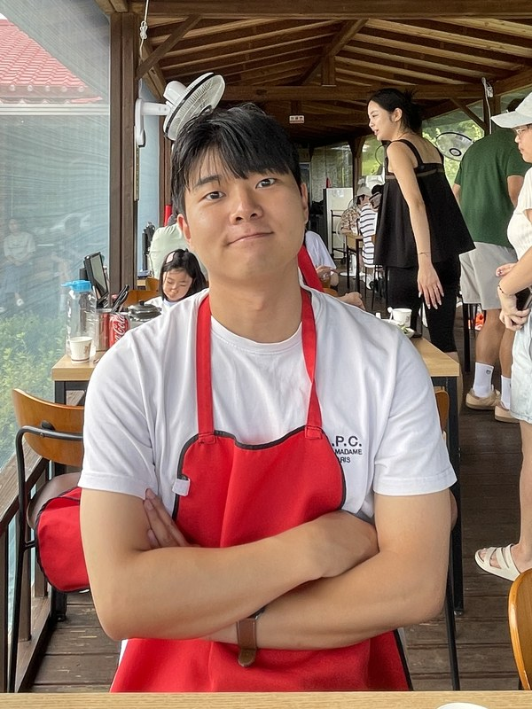
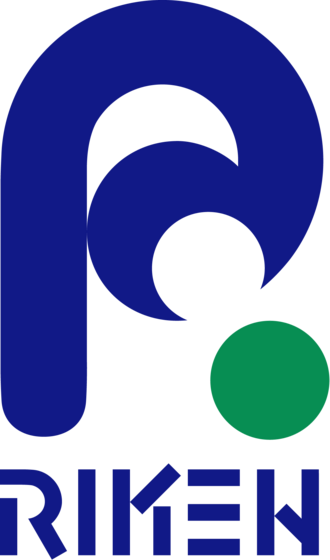
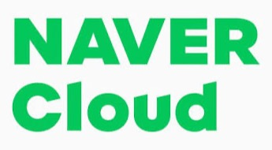
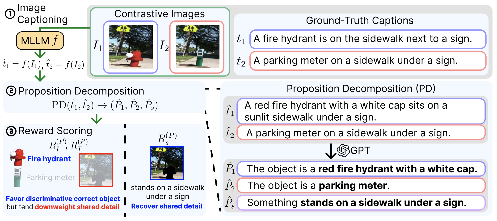
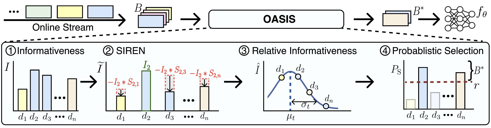
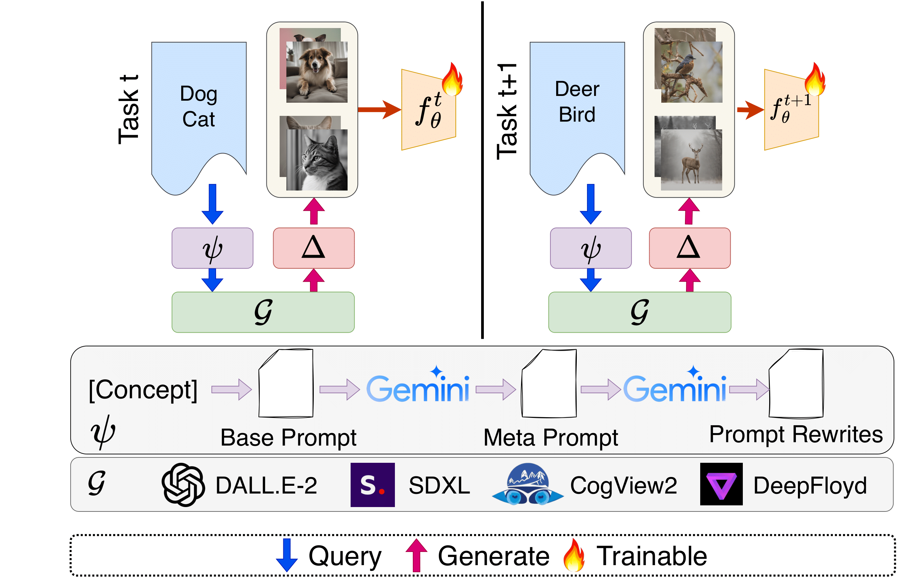
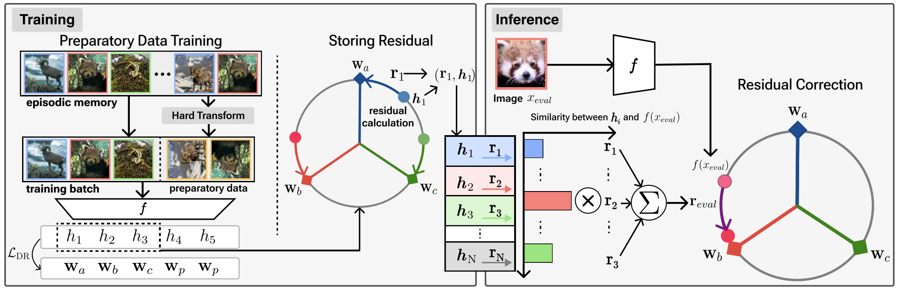

Minjae Lee
I'm an M.S. student in the Interdisciplinary Program in Artificial Intelligence (IPAI), Machine Perception and Reasoning Lab at Seoul National University, advised by Prof. Jonghyun Choi. My research focuses on efficient learning and multi-modal learning.
I received my B.S. from Yonsei University under the supervision of Prof. Jonghyun Choi.
Email / CV / Scholar / Github / LinkedIn







Website template by Jon Barron